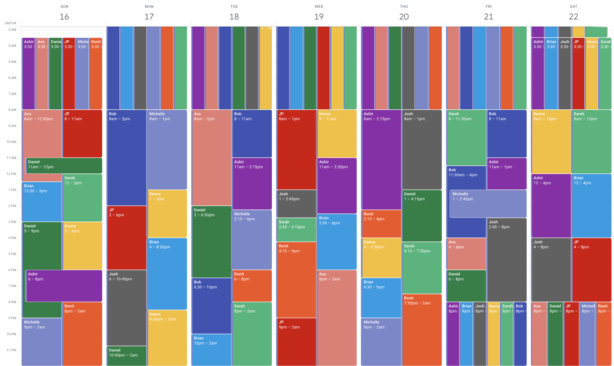
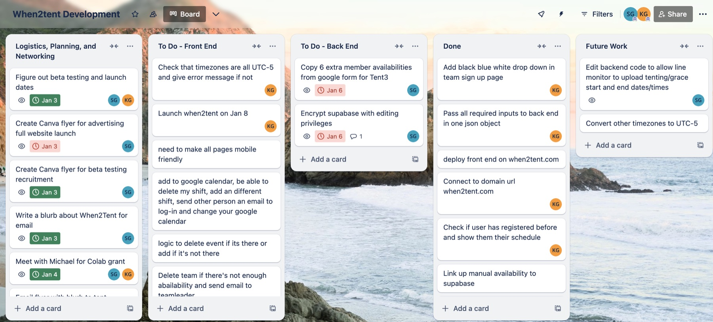
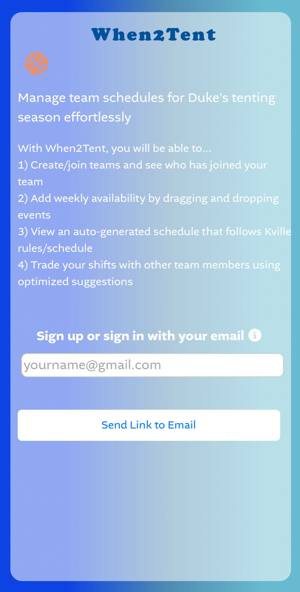

When2Tent: Kville’s Automated Shift Scheduler
As a Duke student, I embraced the vibrant tradition of the Cameron Crazies, the spirited student section renowned in college basketball. Each year, leading up to the Duke vs. UNC game, students participate in “tenting”—a ritual where groups of 12 camp out for six weeks to secure their seats. Tenting has specific set of rules, including mandatory attendance for check-ins by the “line monitors” at all hours of the day, ensuring everyone’s commitment to the process. See my post about earning front row seats in the 2024 season!
As a second-time tent captain, I was all too familiar with the challenges of creating a fair and easy-to-read schedule for my team. In my first season back in 2022, I gathered personal schedules from each team member, considering their classes, extracurriculars, and preferences for shift lengths. This painstaking process took about 20 hours—something I admittedly threw myself into over winter break.

If this time commitment wasn’t enough, as soon as I sent out the schedule, shift trade requests started pouring in. Initially, I tried to manage each request directly, but as the season progressed and my study sessions became increasingly interrupted, I knew I needed a more efficient solution.
One day, during a long flight, I decided to explore coding an algorithm in Python. Although I had only recently learned to code, I crafted a basic framework for user input and output but struggled to get the algorithm functioning properly. I put the idea on hold for more urgent schoolwork, but as the next tenting season approached, I couldn’t shake the thought of tackling this problem. In October 2023, one year later, I took another shot at coding on a flight, armed with new skills in machine learning and advanced algorithms from my studies at Los Alamos. This time, I managed to write a solid 400 lines of code in one sitting. When I got home, I excitedly continued my work and over the course of a few weeks, my complex algorithm grew to over 1,000 lines.
By this time, I had pitched my idea to several friends who were planning to tent. All of them were excited by the idea and encouraged me to continue. My roommate, Keena Gao, like me, had never made a website, but was eager to learn. Together, we took to tackling this problem with the goal of launching a website to help teams create and manage their tenting schedules. Little did we know it would take another 2 months and 2,000 more lines of code to get our idea up and running.
Seeking guidance, we applied for a grant through the Duke Innovation Colab. They provided funding and invaluable support throughout the development process. With advice from a fellow student who had launched his own website, we converted my Python algorithm into an API and hosted it on PythonAnywhere. Keena took charge of designing the front end using ReactJS. We created a Trello board and a Git repository, meeting regularly to work through challenges. It was in one of these early meetings that we eagerly decided on our site’s name: When2Tent. A nod to the commonly used when2meet.com, we felt the name was catchy enough to win the hearts of our fellow students.

I was proud of our final product. When2Tent.com guided groups through the scheduling process, allowing them to create a team, share availability, view an auto-generated schedule, and trade shifts. Each member had a unique dashboard that displayed their personal schedule and team shifts. The site even suggested optimal trades for team members based on availability, with notifications similar to Fantasy Football trade requests.

To promote our launch, we created flyers and posted them around campus and on social media. At one point, every women’s bathroom on campus had an ad for our site! It was nerve-wracking to know that one small bug could derail our progress. I felt like Mark Zuckerberg when he launched FaceBook in The Social Network!

Thanks to our dedication and ongoing maintenance, When2Tent received a plethora of positive feedback during its first season. We saw 180 registered users from more than 20 tents, many of whom found our visual shift management and trade features to be exceedingly helpful. We also received constructive criticism, leading us to implement quick fixes throughout the season. Other suggestions, like shifting from email updates to SMS notifications to enhance user experience, were too extensive to tackle mid-season, but were noted for future versions.
By the end of the tenting season, Keena and I were set to graduate in a matter of months. Determined to keep our project alive for future generations of Duke students, I organized a meeting with the Colab and the Duke Applied Machine Learning Club (DAML) to discuss future plans. Now, with the next season of tenting coming up, the student programmers in DAML are working diligently to implement new features, bolster database security, and document our processes for generations of students to come.